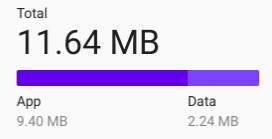

# RTL 布局适配实践 --- ## 目录 1. 背景 2. 适配方案：编译时转换 3. LTR vs RTL 1. 规则 2. 书写模式和方向 3. 物理属性 vs 逻辑属性和逻辑值 4. 题外话：deep 4. 文本方向 1. HTML 实体、标签和属性 2. CSS 属性 5. Q & A --- ## 背景 * 产品需要支持阿拉伯语 * 项目代码跨度近 8 年，代码量大 * 技术栈：vue + less + rspack * Chrome >= 87，Edge >= 88， FireFox >= 78，Safari >= 14 --- ## 适配方案：编译时转换 * 最终采取的方案是：在编译时将所有的物理属性转成逻辑属性。 * 具体的时机：less 转义之后，lightning css 之前。 1. 首先会将物理属性转为逻辑属性 2. 然后对非逻辑属性的 css 属性生成兼容 rtl 的属性 3. 剩下的手动修改。1、2步减少了 95% 的工作量 [开发记录](https://isg9eor0qe0b.sg.larksuite.com/wiki/Adm3wRc0xiGsl4kVwQllUjnIg1d#share-BdQfdcO1Sof70lxBF8Glpj7Xgje) --- <div style="font-size: .7em;"> ## LTR vs. RTL LTR和RTL布局的主要区别： |元素|LTR|RTL| |---|---|---| |文本|句子从左向右阅读。|句子从右向左阅读。| |时间线|事件序列从左向右进行。|事件序列从右向左进行。| |图像|从左向右的箭头表示向前运动：→|从右向左的箭头表示向前运动：←| > 虽然RTL大体上是镜像布局，但并不是所有地方都需要这样处理，其中有些细节需要注意。 </div> --- --- ### 图标翻转规则1 <style> b>img { width: 48px; margin: 0 !important; vertical-align: top; } </style> <b><img src="./img/history_24dp_E3E3E3_FILL0_wght400_GRAD0_opsz24.svg"/> history</b> <b> update</b> <b> keyboard</b> <div class="fragment" style="font-size: .7em;"> <hr/> <p>带有现实世界物理物品映射的东西不需要镜像。例如：</p> * 时钟图标。顺时针逆时针在各个文化中的方向都是相同的 * 媒体播放按钮和媒体进度指示器。因为其物理映射是磁带的方向，都是从左到右 * 键盘图标、耳机图标等，物理键盘、耳机在任何地方看起来都一样，因此不应该镜像 </div> --- ### 图标翻转规则2、3 * <b><img src="./img/arrow_forward_24dp_E3E3E3_FILL0_wght400_GRAD0_opsz24.svg"/> arrow forward</b> <b><img src="./img/arrow_back_24dp_E3E3E3_FILL0_wght400_GRAD0_opsz24.svg"/> arrow back</b> * <b> 传达向前移动的感觉</b> * <b> 飞机出发</b> <b> 飞机降落</b> * <b> 发送</b> *  <div class="fragment" data-fragment-index="2" style="font-size: .8em;"> <hr/> 2. 除非违反规则1，否则任何描绘时间流逝的事物都应该被镜像。例如进度条的填充方向等。 3. 描述带方向性行为的事物都应该镜像。例如前进、后退按钮。 </div> --- ### 图标翻转规则456 * <b></b> <b></b> <b></b> <b> 删除斜线</b> * <b><img src="./img/chat_24dp_E3E3E3_FILL0_wght400_GRAD0_opsz24.svg"/></b> <b><img src="./img/comment_24dp_E3E3E3_FILL0_wght400_GRAD0_opsz24.svg"/> 对话图标</b> * <b><img src="./img/search_24dp_E3E3E3_FILL0_wght400_GRAD0_opsz24.svg"/> 搜索</b> * <b> 咖啡杯</b> <div class="fragment" data-fragment-index="2" style="font-size: .8em;"> <hr/> 4. 大多数 RTL 国家/地区 不会镜像 删除斜线。 5. 带有包含文本表示的图标需要镜像 6. 看起来具有方向性，但实际上表示右手操作的图标不需要镜像，因为大多数人都是右撇子。例如放大镜搜索图标、咖啡杯图标。 </div> --- <div style="font-size: .6em;"> ### 书写模式和方向 * `writing-mode` 属性控制了横排文字还是竖排文字，以及竖排时下一行位于上一行的左侧还是右侧。 * 内蒙古文、满文：从上到下，从左到右 * 金文、古汉语、古日文、轻小说、台湾漫画翻译：从上到下，从右到左 * `direction` 属性设置文本流方向是 `ltr`（默认）还是 `rtl`。 ↙水平书写模式 | 垂直书写模式↘ <img src="./img/mdn-horizontal.png"/> <img src="./img/mdn-vertical.png"/> </div> --- <div style="font-size: .8em;"> ### 逻辑属性与逻辑值 * 物理属性指的是拥有上下左右等描述的属性。不受书写模式影响。 * 例如 `margin-left`、`padding-right`。 * 逻辑属性指的是受书写模式影响的属性 * 例如 `margin-inline-start`、`padding-block-end`。 * 目前来说，由于只需要兼容 RTL，所以只需要关注 `*-inline-start` 和 `*-inline-end` 属性。 * `inline-block`、`flex`、`table`、`grid` 的布局方向被影响 [开发记录](https://isg9eor0qe0b.sg.larksuite.com/wiki/Adm3wRc0xiGsl4kVwQllUjnIg1d#share-BdQfdcO1Sof70lxBF8Glpj7Xgje) </div> --- ### 题外话：deep <style> .col3 { display: flex; } .col3 >div:first-child { min-width: 400px; } .col3>div:nth-child(2) { flex: 1; } </style> <div> ```css [] :deep(.a1), :deep(.b1) {} :deep(.a2, .b2) {} :deep(.a3) {} :deep(.b3) {} :deep(*).a4, :deep(*).b4 {} :deep(*):where(.a5, .b5) {} :deep(:where(.a6, .b6)) {} ``` </div> <div class="col3"> <div> <pre><code data-line-numbers="1,3,4,5,6">[] .a1 {} [] .b1 {} [] .a2 {} [] .a3 {} [] .b3 {} [] *.a4 {} [] *.b4 {} [] *:where(.a5, .b5) {} [] :where(.a6, .b6) {} </code></pre> </div> <div> <pre><code data-line-numbers="3,5,6">[]:is(:deep(.a1), :deep(.b1)) {} [] .a2 {} [] .a3 {} [] .b3 {} []:is(:deep(*).a4, :deep(*).b4) {} [] *:where(.a5, .b5) {} [] :where(.a6, .b6) {} </code></pre> </div> </div> 目前写法 3、5、6 正常 --- ## 文本方向 1. 双向文本 和 Unicode 双向算法（Unicode Bidirectional Algorithm，也简称 bidi 算法） 2. Unicode 字符方向属性 3. Web 中控制文字方向的三种方式 1. HTML 实体 `‎` 和 `‏` 2. HTML 的 `bdi` 与 `bdo` 标签，和 `dir` 属性 3. CSS 的 `direction` 和 `unicode-bidi` 属性 --- ## 文本方向 1. 双向文本 * 字符串中同时有 LTR 和 RTL 文本 * 嵌入在英文字符串中的阿拉伯语引语 * 阿拉伯句子中包含英文单词 2. Unicode 双向排序算法 * 逻辑顺序：内存中的顺序 * 显示顺序：渲染显示在屏幕上的顺序 --- ## 文本方向 <div style="font-size: .8em;"> Unicode 字符方向属性：强字符、中性字符、弱字符。 * 强字符：方向确定，不受上下文影响，影对前后的中性字符<small> 大部分的字符都属于强字符，比如拉丁字符、汉字、阿拉伯字符</small> * 中性字符：方向不确定，受前后字符的方向属性影响<small> 大部分的标点符号（“-”，“[]”，"()"等）和空格</small> * 弱字符：方向确定，不会影响前后字符的方向<small> 数字以及跟数字相关的符号</small> 一个区域内有总体方向，决定从这个区域的哪边开始书写文字，通常称为 ***基础方向*** 。 ***方向串*** 是指在一段文字中具有相同方向性的连续字符，并且其前后没有相同方向性的其它方向串。 </div> --- 对于从右到左显示的字符串： <span>The apple is called تفاحة in ar.</span> ```txt The apple is called تفاحة in ar. ------------------> <---- -----> -------------------------------> 基础方向向右 ``` 如果直接将其切换成从左到右： <span dir="rtl">The apple is called تفاحة in ar.</span> ```txt .in ar تفاحة The apple is called < 符号方向向左 ----> <---- ------------------> <------------------------------- 基础方向向左 ``` --- ## 文本方向 Web 中控制文字方向的三种方式： 1. HTML 实体 `‎` 和 `‏` 2. HTML 的 `bdi` 与 `bdo` 标签，和 `dir` 属性 3. CSS 的 `direction` 和 `unicode-bidi` 属性 --- ## 文本方向 - HTML 实体 |Unicode 控制字符|HTML 实体|作用| |---|---|---| |left to right mark (LRM, U+200E)|`‎` or `‎`|从左到右强字符| |right to left mark (RLM, U+200E)|`‏` or `‎`|从右到左强字符| --- The title is "مفتاح معايير الويب!" in Arabic. ASCII: The title is "!biula riiacm Hatfm" in Arabic. 当 bidi 算法产生不良结果时，放置 HTML 实体可能是必要的： ```html The title is "مفتاح معايير الويب!‏" in Arabic. ``` The title is "مفتاح معايير الويب!" in Arabic. 在感叹号后插入 Unicode 从右到左的标记（通过 HTML 字符实体 ``）可正确定位它。 --- --- ## 文本方向 - HTML 标签 * `<bdi>`：Bidirectional Isolate element 双向隔离元素 * 从 bidi 算法上下文中隔离出来 * 不知道插入文本的方向性时（例如从数据库读取的或由用户输入的），它特别有用。 * `<bdo>`：Bidirectional Text Override element 双向文本覆盖元素 * 用于覆盖基础方向 --- ## 文本方向 - HTML 标签 - 例1 `EMBEDDED-TEXT - 1st place` 当 `EMBEDDED-TEXT` 是 LTR 没问题。 但如果其是 RTL 则 `- 1` 会被视为 RTL 文本（因为它由中性和弱字符组成），渲染结果将是乱码： `1 - EMBEDDED-TEXTst place` --- ## 文本方向 - HTML 标签 - 例2 ```html <ul> <li><mark>سما</mark>: 3rd place</li> <li><mark><bdi>الرجل القوي إيان</bdi></mark>: 4th place</li> </ul> ``` 渲染结果： <ul> <li><mark>سما</mark>: 3rd place</li> <li><mark><bdi>الرجل القوي إيان</bdi></mark>: 4th place</li> </ul> --- ## 文本方向 - HTML 标签 逻辑上 `<bdi>` 元素等同于： ```html 1. <span style="unicode-bidi: isolate"></span> 2. <span dir="auto"></span> ``` 但不推荐使用上面两种进行替代，因为： 1. 不具有语义，并且浏览器可以忽略 CSS 样式 2. 语义不清晰 --- ## 文本方向 - HTML 属性 `dir` dir 属性接受 3 个值：`ltr`、`rtl`、`auto`。 * `auto` 指让用户代理来决定。找到具有强方向性的字符，然后将该方向性应用于元素。 * 如果未指定，则该值从父元素继承（除了 `<bdi>`）。 * 这个属性对有不同语义的 `<bdo>` 元素是必须的。 * `<bdi>` 元素中不可继承，默认值是 `auto`。 * 可以被 CSS `direction` 和 `unicode-bidi` 覆盖。 * 推荐使用这一属性而非 CSS 属性。在不支持 CSS 或禁用 CSS 的浏览器中，文本也会正常显示。 --- ## 文本方向 - HTML 属性 `dir` * 浏览器可能允许用户更改 `<input>` 和 `<textarea>` 的方向性。Chrome 和 Safari 在输入字段的上下文菜单中提供了方向性选项。Firefox 使用 <kbd>Ctrl</kbd>/<kbd>Cmd</kbd> + <kbd>Shift</kbd> + <kbd>X</kbd> 但不会更新 dir 属性值。 input: <input type="text" style="font-size: 2rem;" /> input with `dir="auto"`: <input type="text" dir="auto" style="font-size: 2rem;"/> <i>سما</i> --- ## 文本方向 - CSS 属性 * `writing-mode`：属性控制了横排还是竖排文字 * `direction`：设置文本流方向是 `ltr`（默认）还是 `rtl`。行级元素上 unicode-bidi 属性的值必须是 `embed` 或 `override` 才能生效。 * `unicode-bidi`：需要理解 bidi 算法，详细需要看 [Unicode双向算法详解(bidi算法)（一）](https://blog.csdn.net/hyongilfmmm/article/details/102781743)。总之遇到问题的时候就每个值都试一下，哪个管用就上哪个。 --- ## 文本方向 unicode-bidi 辅助理解 --- ## 实际转换过程中的场景问题 [开发记录](https://isg9eor0qe0b.sg.larksuite.com/wiki/Adm3wRc0xiGsl4kVwQllUjnIg1d) --- # Q & A